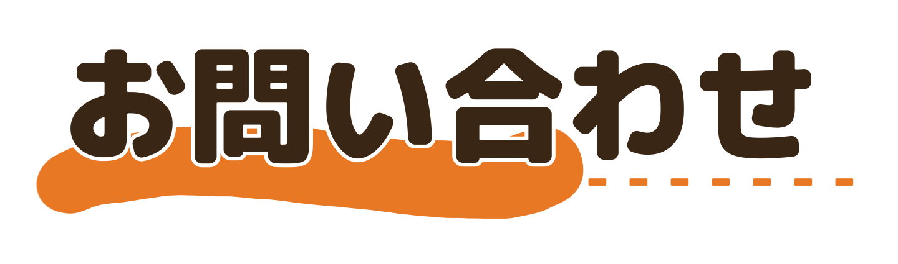

～名古屋大学ボランティアサークルすずめ～

名古屋大学法学部の学生によって誕生したボランティアサークル「すずめ」です。
団体名には、「日常生活でよく見かけるすずめのように、地域社会にとって親しみのある団体になれるように」という願いを込めています。
私たちは活動を通して、地域の住民同士の繋がりを再構成したいと考えています。全ての人が心地よい社会で生き続けることができるように、私たちのような若い世代が少しでもつながりを後世に繋ぐ橋渡しになれたらと願っています。

現在の主な活動は高齢者向けのスマホ教室です。iPhoneとAndroidの両方に対応します。
季節によっては地域のお祭りのボランティアスタッフも務めます。
他にも可能な限りで様々な活動を行っておりますので、名古屋市内でボランティアスタッフをご依頼の方はぜひ一度お問い合わせのメール等でご連絡ください。
活動内容について詳しくは>>>こちら

団体様は公式LINEまたはgmailに、学生はInstagramまたはTwitterのDMにご連絡お願いします。
---連絡先一覧---
☆公式LINE>>>こちら
☆メールアドレス>>> nagovora.suzume@gmail.com
☆公式X(Twitter)>>> @suzume_nuvol
☆公式Instagram>>> @suzume_nagoyavolunteer